File: 000151.gt.txt (if the image is defective, simply delete all Arabic text and the line will be excluded)
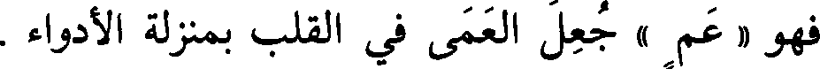
فهو « عم » جعل العمى في القلب بمنزلة الأدواء .
File: 000152.gt.txt (if the image is defective, simply delete all Arabic text and the line will be excluded)

وكذلك « وجل » وأشباهه - من(2) الذعر والخوف - شبه به لأنه داء
File: 000153.gt.txt (if the image is defective, simply delete all Arabic text and the line will be excluded)

أصاب قلبه ، نحو « فرق » و« وجل » و« فزع » ، وقالوا : « جرب » ،
File: 000154.gt.txt (if the image is defective, simply delete all Arabic text and the line will be excluded)

و « شعث » ، و« حمق » ، و« قعس » ، و« كدر » ، و« خشن » .
File: 000155.gt.txt (if the image is defective, simply delete all Arabic text and the line will be excluded)

وقالوا : « سهك » و« لخن » و« لكد » و« لكن » و« قنم » ،
File: 000156.gt.txt (if the image is defective, simply delete all Arabic text and the line will be excluded)

و« حسك » كل هذا للشيء يتغير من الوسخ ويسود ، جعلوه(3) كالداء ؛ لأنه
File: 000157.gt.txt (if the image is defective, simply delete all Arabic text and the line will be excluded)

وشبيه(4) بذلك ما تعقد ولم يسهل ، نحو : « عسر » و« شكس »
File: 000158.gt.txt (if the image is defective, simply delete all Arabic text and the line will be excluded)
عيب .
File: 000159.gt.txt (if the image is defective, simply delete all Arabic text and the line will be excluded)

و« لقس »(5) و« لحز » و« نكد » و« لحج » ؛ لأن هذه أشياء مكروهة ؛
File: 000160.gt.txt (if the image is defective, simply delete all Arabic text and the line will be excluded)
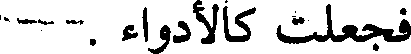
فجعلت كالأدواء .
File: 000161.gt.txt (if the image is defective, simply delete all Arabic text and the line will be excluded)

وقد يدخل(6) « فعيل » على « فعل » في بعض هذا الباب ، قالوا :
File: 000162.gt.txt (if the image is defective, simply delete all Arabic text and the line will be excluded)
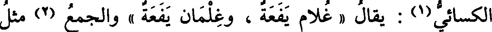
الكسائي(1) : يقال « غلام يفعة ، وغلمان يفعة » الجميع(2) مثل
File: 000163.gt.txt (if the image is defective, simply delete all Arabic text and the line will be excluded)

الواحد .
File: 000164.gt.txt (if the image is defective, simply delete all Arabic text and the line will be excluded)
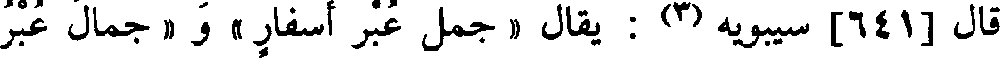
قال [641] سيبويه(3) : يقال « جمل عبر أسفار » و« جمال عبر
File: 000165.gt.txt (if the image is defective, simply delete all Arabic text and the line will be excluded)
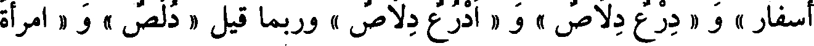
أسفار » و« درع دلاص » و« أدرع دلاص » وربما قيل « دلص » و« امرأة
File: 000167.gt.txt (if the image is defective, simply delete all Arabic text and the line will be excluded)
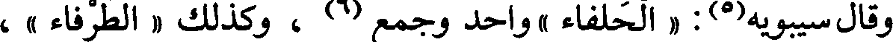
وقال سيبويه(5) : « الحلفاء » واحد وجمع(6) ، وكذلك « الطرفاء » ،
File: 000168.gt.txt (if the image is defective, simply delete all Arabic text and the line will be excluded)

و « البهمى » واحدة(7) وجميع ، و« الشكاعى » واحدة وجميع .
File: 000169.gt.txt (if the image is defective, simply delete all Arabic text and the line will be excluded)
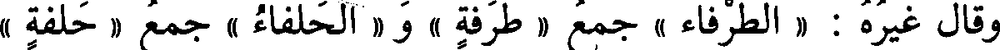
وقال غيره : « الطرفاء » جمع « طرفة » و« الحلفاء » جمع « حلفة »
File: 000170.gt.txt (if the image is defective, simply delete all Arabic text and the line will be excluded)
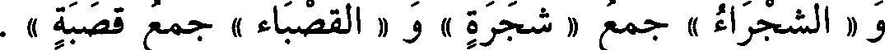
و « الشجراء » جمع « شجرة » و« القصباء » جمع قصبة » .
File: 000171.gt.txt (if the image is defective, simply delete all Arabic text and the line will be excluded)

قال الفراء مثل ذلك ، إلا في « الحلفاء » فإنه قال : لم أسمع
File: 000172.gt.txt (if the image is defective, simply delete all Arabic text and the line will be excluded)
الواحدة(8) منها إلا « حلفاءة » وتصغر « حليفية »(9) .
File: 000173.gt.txt (if the image is defective, simply delete all Arabic text and the line will be excluded)
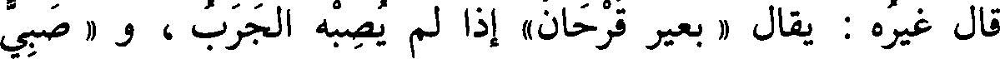
قال غيره : يقال « بعير قرحان» إذا لم يصبه الجرب ، و « صبي
File: 000174.gt.txt (if the image is defective, simply delete all Arabic text and the line will be excluded)

قرحان » إذا لم يصبه الجدري ،الواحد والاثنان(10)والمذكر والمؤنث فيه
File: 000175.gt.txt (if the image is defective, simply delete all Arabic text and the line will be excluded)

الميم بمنزلة الهمزة ، فقالوا مفعول كما قالوا أفعول ، وكما قالوا مفعال لما
File: 000176.gt.txt (if the image is defective, simply delete all Arabic text and the line will be excluded)

قالوا إفعال ، [613] ومفعيل لما قالوا إفعيل ، وقالوا : « معلوق »
File: 000177.gt.txt (if the image is defective, simply delete all Arabic text and the line will be excluded)

للمعلاق . وزاد غيره : و« مغرود » لضرب من الكمأة ، و« مغفور » لواحد
File: 000178.gt.txt (if the image is defective, simply delete all Arabic text and the line will be excluded)

المغافير ، ويقال : « مغثور » أيضا ، و « منخور » للمنخر ، وقالوا(1) : شبه
File: 000179.gt.txt (if the image is defective, simply delete all Arabic text and the line will be excluded)

بفعلول .
File: 000180.gt.txt (if the image is defective, simply delete all Arabic text and the line will be excluded)

وقال أيضا(2) غيره : وليس يأتي « مفعول » من ذوات الثلاثة - وهي من
File: 000181.gt.txt (if the image is defective, simply delete all Arabic text and the line will be excluded)
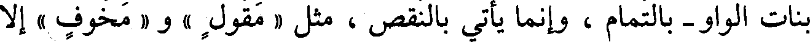
بنات الواو - بالتمام ، وإنما يأتي بالنقص ، مثل « مقول » و« مخوف » إلا
File: 000182.gt.txt (if the image is defective, simply delete all Arabic text and the line will be excluded)

حرفان ، قالوا : مسك « مدووف » وثوب « مصوون » .
File: 000183.gt.txt (if the image is defective, simply delete all Arabic text and the line will be excluded)

فأما(4) ذوات الياء فتأتي بالنقص والتمام ، يقال(5) : بر « مكيل »
File: 000184.gt.txt (if the image is defective, simply delete all Arabic text and the line will be excluded)

و « مكيول » وثوب « مخيط » و « مخيوط » ورجل « معين » و « معيون » .
File: 000185.gt.txt (if the image is defective, simply delete all Arabic text and the line will be excluded)

وقال سيبويه : ولم يأت على « فعول » اسم ولا صفة(6) .
File: 000186.gt.txt (if the image is defective, simply delete all Arabic text and the line will be excluded)

وقال غيره : قد جاء « سبوح » و « قدوس » و« ذروح »(7) لواحد
File: 000187.gt.txt (if the image is defective, simply delete all Arabic text and the line will be excluded)
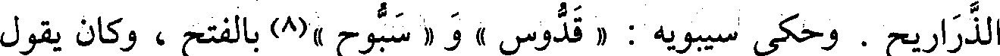
الذراريح . وحكى سيبويه : « قدوس » و « سبوح »(8) بالفتح ، وكان يقول
File: 000188.gt.txt (if the image is defective, simply delete all Arabic text and the line will be excluded)

باب شواذ التصريف
File: 000189.gt.txt (if the image is defective, simply delete all Arabic text and the line will be excluded)

قال الفراء وغيره : العرب إذا ضمت حرفاإلى حرف فربماأجروه على
File: 000190.gt.txt (if the image is defective, simply delete all Arabic text and the line will be excluded)

بنيته ، ولو أفرد(1) لتركوه على جهته الأولى ؛ من ذلك قولهم : « إني لآتيه
File: 000191.gt.txt (if the image is defective, simply delete all Arabic text and the line will be excluded)

بالعشايا والغدايا » فجمعوا(2) الغداة غدايا لما ضمت إلى العشايا .
File: 000192.gt.txt (if the image is defective, simply delete all Arabic text and the line will be excluded)

وأنشد(4) :
File: 000193.gt.txt (if the image is defective, simply delete all Arabic text and the line will be excluded)

هتاك أخبية ولاج أبوبة يخلط بالجد منه البر واللينا
File: 000194.gt.txt (if the image is defective, simply delete all Arabic text and the line will be excluded)

فجمع الباب« أبوبة » إذ كان متبعا لأخبية ، ولو أفرد(5) لم يجز[623]
File: 000195.gt.txt (if the image is defective, simply delete all Arabic text and the line will be excluded)

وقال آخر(6) :
File: 000196.gt.txt (if the image is defective, simply delete all Arabic text and the line will be excluded)

أزمان عيناء سرور المسرور عيناء حوراء من العين الحير
File: 000197.gt.txt (if the image is defective, simply delete all Arabic text and the line will be excluded)

فقال « الحير » إذ كان بعد « العين » .
File: 000198.gt.txt (if the image is defective, simply delete all Arabic text and the line will be excluded)

قال الفراء : وأرى قولهم في الحديث(7) : « ارجعن مأزورات غير
File: 000199.gt.txt (if the image is defective, simply delete all Arabic text and the line will be excluded)

أحرف من ذوات الواو ، وهي « كينونة » و « ديمومة » و« هيعوعة »
File: 000200.gt.txt (if the image is defective, simply delete all Arabic text and the line will be excluded)

و« سيدودة » ، وإنما جعلت بالياء وهي من الواو ؛ لأنها جاءت على بناء
File: 000201.gt.txt (if the image is defective, simply delete all Arabic text and the line will be excluded)

لذوات الياء ليس(1) للواو فيه حظ فقيلت بالياء ، كما قالوا « الشكاية » وهي